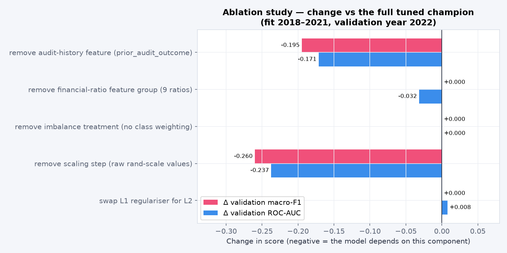
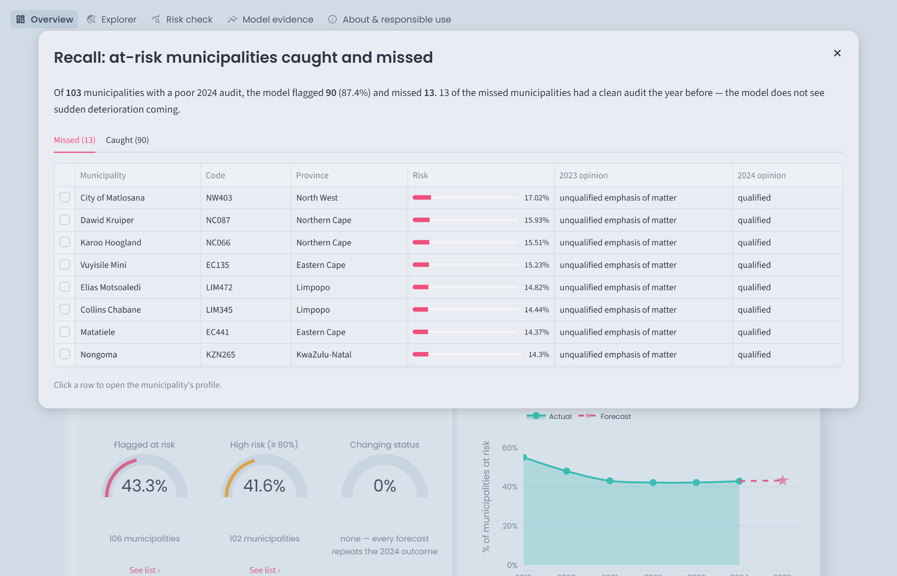
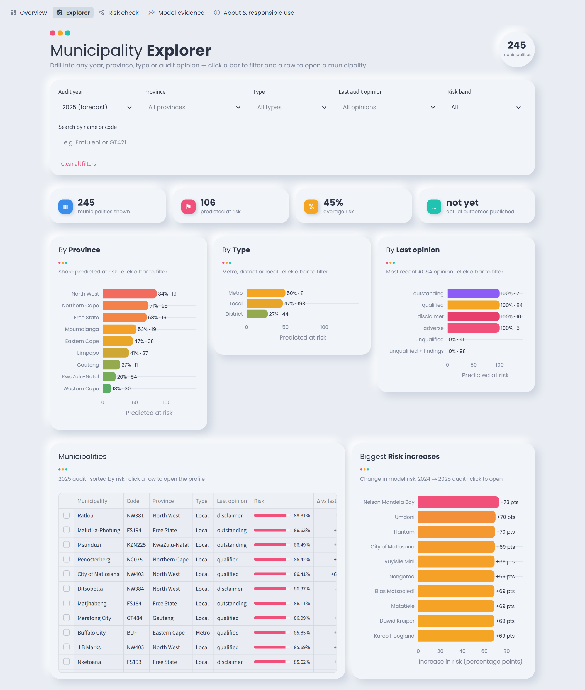
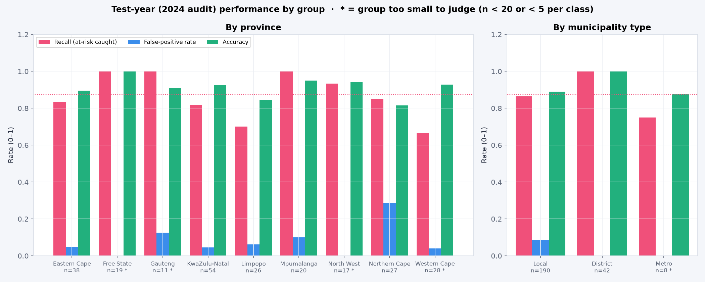

IDA117V · Introduction to Data Science · Group project
Helping National Treasury reach struggling municipalities before their next Auditor-General audit
[Group number] · [Member names] · [Lecturer] · October 2026
01 · The problem
The Auditor-General audits all 257 municipalities every year. Poor financial management shows up as unpaid bills, neglected infrastructure and failing water, electricity and refuse services, but the audit result only arrives after the year has closed.
National Treasury's local government support function and the provincial treasuries choose where to send finance secondments, oversight and support each year, with a limited budget and staff.
Earlier, consistent, evidence-based targeting of support, reaching struggling municipalities before service delivery collapses. The model supports human judgement; it does not replace the audit.
IDA117V · Predicting municipal audit outcomes · 2
02 · The task
Inputs · year t
9 audited financial indicators: revenue, expenditure, surplus, cash coverage, collection rate, debtor days, repairs, irregular spending, grants
+ last year's audit outcome
Model
one audit cycle ahead
Target · year t+1
At risk: qualified, adverse, disclaimer or outstanding
Not at risk: unqualified, with or without findings
Primary metric: macro-F1
Both classes matter equally; accuracy alone hides missed cases.
A missed municipality
Support arrives a year late, after services have already failed.
A false alarm
Scarce support and staff go where they were not needed.
IDA117V · Predicting municipal audit outcomes · 3
03 · The data
257
municipalities
1,434
municipality-years
2018–23
feature years
45.5%
at risk next year
Municipal Money (municipaldata.treasury.gov.za): income and expenditure, financial position, debtors, repairs, irregular expenditure, grants and Auditor-General opinions. Free commercial and non-commercial reuse.
No personal data (POPIA): officials' names and contacts excluded. Self-reported figures include implausible values; early missing years are stored as zero; the grants extract is incomplete.
IDA117V · Predicting municipal audit outcomes · 4
04 · Leakage-safe split
Train · 2018–2021
950 rows · fit and tune
Validate 2022
244 · pick champion
Test 2023
240 · used once
Forecast 2024
245 · 2025 audit
Our first run used a random split and the year as a feature, letting the future inform the past. We re-ran every model on the time split; the champion changed from Random Forest to Logistic Regression.
IDA117V · Predicting municipal audit outcomes · 5
05 · Models
| Model | Family | Macro-F1 | ROC-AUC | CV macro-F1 |
|---|---|---|---|---|
| Dummy (majority class) | Baseline | 0.366 | 0.500 | 0.33 ± 0.03 |
| Repeat last year's outcome | Baseline | 0.887 | 0.887 | 0.87 ± 0.02 |
| Logistic Regression | Traditional | 0.887 | 0.928 | 0.87 ± 0.02 |
| Random Forest (200 trees) | Traditional | 0.878 | 0.913 | 0.87 ± 0.02 |
| MLP (64–32, dropout 0.2) | Neural | 0.879 | 0.929 | 0.75 ± 0.18 |
| Residual tabular network | Neural | 0.879 | 0.927 | 0.74 ± 0.20 |
Champion: Logistic Regression, chosen on validation only: best macro-F1 and PR-AUC (0.922) among the four models, and the most stable across walk-forward folds.
IDA117V · Predicting municipal audit outcomes · 6
06 · What the models learned
100%
of Logistic Regression's validation predictions match “repeat last year's outcome”
97–98%
for Random Forest and both neural networks
0.887
macro-F1 of the rule alone, equal to the best model
IDA117V · Predicting municipal audit outcomes · 7
07 · Overfitting and optimisation
1.00 → 0.88
Random Forest memorises the training years (train vs validation macro-F1).
Logistic Regression and both networks show no gap. Early stopping halted the networks at epochs 13 and 8, with dropout and weight decay as further controls.
0.870 → 0.874
CV macro-F1 before and after tuning: smaller than the fold-to-fold spread (± 0.025), so not a meaningful gain.
Chosen: L1 penalty, C = 0.074. It switched off 5 of the 9 ratios, keeping cash coverage, repairs and maintenance, operating surplus and revenue.
IDA117V · Predicting municipal audit outcomes · 8
08 · One-time test
0.906
Macro-F1
95% CI 0.866–0.941
90/103
Failing caught
recall 0.874 · 13 missed
9/137
False alarms
precision 0.909
0.896
ROC-AUC
rule alone: 0.904
All 22 errors are municipalities whose status changed. The 13 missed were clean in 2023 and failed in 2024; the 9 false alarms improved. The model generalises well but cannot see a change coming.
IDA117V · Predicting municipal audit outcomes · 9
09 · Ablation and McNemar's test

Five one-change experiments, same split and seed. Removing all nine ratios leaves macro-F1 unchanged but lowers ROC-AUC by 0.032.
217
both correct
1
champion only
0
MLP only
22
both wrong
H₀: equal error rates, α = 0.05. One discordant pair, so exact binomial: p = 1.000, not rejected.
No real difference: we keep Logistic Regression for simplicity and stability.
IDA117V · Predicting municipal audit outcomes · 10
10 · Deployment
Profile: 2025 forecast with reasons, rank, risk history and audit opinions

Every KPI opens its detail: here, the 13 municipalities recall missed
Streamlit app running the saved pipeline: overview, explorer, a profile for each of 245 municipalities, risk check with input validation, model evidence and a responsible-use page.
IDA117V · Predicting municipal audit outcomes · 11
11 · Live demonstration
1
Overview → Recall Details: the 13 missed municipalities
2
Top-10 bar → Ratlou profile: 89% risk, #1 of 245, 7-year streak
3
Explorer → click North West: 16 of 19 flagged
4
Upload valid_cases.csv: Masilonyana 89.9%, Tsantsabane 77.2%, eThekwini 9.2%
5
Upload invalid_case.csv: three clear errors, nothing scored

streamlit run app/app.py
IDA117V · Predicting municipal audit outcomes · 12
12 · Uncertainty and fairness

Province and type are not model inputs; groups marked * are too small to judge.
0 of 22
status changes predicted correctly; about 22 more are likely in 2025
28.6%
false alarms in the Northern Cape, vs 5–10% elsewhere
70%
recall in Limpopo: 3 of 10 failing municipalities missed
IDA117V · Predicting municipal audit outcomes · 13
13 · Recommendation for National Treasury
Next version: add quarterly in-year section 71 data, audit findings and senior vacancies, and predict a change in status directly.
IDA117V · Predicting municipal audit outcomes · 14
14 · Reproducibility and team
python run_all.py
11 steps in 4.1 minutes from a fresh clone, with every result identical. Seed 42, pinned requirements, no manual steps or secrets; dataset card, data dictionary and experiment log in docs/.
Thapelo [surname]
Data and preparation
Pamela Khosa
Modelling
Tendani Tshinavhe
Evaluation and deployment
[Member]
[Role]
[Member]
[Role]
[Member]
[Role]
Data: National Treasury, Municipal Money (municipaldata.treasury.gov.za). AI-assisted code and drafting declared in the report and contribution statement.
IDA117V · Predicting municipal audit outcomes · 15